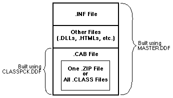

|
| ||
|
| ||
March 20, 1997
Contents
The Problem and a Solution
About CAB Files
Using the CAB in a Web Page
The Templates
Summary
As Java applets have become larger and more complex, it has become increasingly important to find a faster and more effective way to download applets and their supporting classes. By default, applets are downloaded one .class file at a time and in uncompressed format. So not only is additional time needed to negotiate the transfer of each file, but extra, unnecessary bytes may be transferred because of the lack of compression. For feature- and class-rich applets, this download time can be excessive.
One way to reduce download times and improve the user's perception of the speed and utility of your Java applet is to use cabinet (CAB) files. Cabinet files are a highly efficient method of compression and distribution that has been used by Microsoft for its own products for many years. It is now available to anyone who needs to compress and distribute multiple files.
When used for Java applets, the CAB file serves as a single, compressed respository for all .class files and all audio and image data required by the applet. (Currently, CAB support for other types of data required by the applet is not available.) Only the CAB file is downloaded, so the time of download is whatever it takes to negotiate the transfer and download the compressed bytes. Once downloaded, the system extracts and installs the contents of the CAB file.
The use of CAB files also provides an extra level of security when combined with the code-signing mechanism. Like ActiveX™ controls, CABs containing Java classes can be signed for download. Users will feel more comfortable downloading these signed materials. The Java implementation currently follows the sandbox security model; the optional signing of applets allows them to access more features of the local system, bringing applets on par with the capabilities of ActiveX controls without sacrificing the security in the Java implementation.
There are two ways that this technology can be implemented. The first is for developers who have single applets that require a large number of .class files specific to that applet or similar applets, and can be stored temporarily. This format will increase the speed of class download and will store the classes in the temporary cache as the user moves through your network. The second is for developers who want to distribute class libraries to users for development and continuous use. Users, such as home and business developers, can download a single CAB or set of CABs and install the classes so that applets can call them as system classes.
Using CAB files can reduce the overall download and applet initialization time by 70 percent over the conventional method. As an additional benefit, the system automatically provides version control and checks against vendor conflicts as it installs the applet files.
The CAB file format is a non-proprietary format based on Lempel-Ziv compression. At the heart of this format is the MakeCAB compression tool, a lossless data compression tool that provides efficient compression for setup programs and Internet applications alike. With MakeCAB, you can store multiple files in a single cabinet file and carry compression across files.
To create a CAB file, you create a directive (.DDF) file, a text file that names the files you want to include, and the compression options to use. For Java applets, this means that you list the .class files needed by your applet. Building the CAB file takes a simple command line:
makecab /f MyApplet.ddf
More simply, we now provide a tool called CABARC (CABinet ARChiver), which can bypass the need for a .DDF file. Instead, you can use command-line options to build the CAB. For example, if you wanted to build a cabinet of all the files in a directory, you would use the command
cabarc n foo.cab *.*
Typing
cabarc
by itself at the command line will give you the list of all available options. Additional details are provided in the README file.
For Java libraries, you also include a setup information (.INF) file. This text file defines which files to extract from the CAB and where to place them on the user's system. Placing files where you want them helps prevent .class files from some other applet from overwriting your own. You include the .INF in the CAB when you build it.
For Java applets, you use the CABBASE parameter in an <APPLET> tag to point to the CAB file. If the applet is not already present on the user's system, the CAB is downloaded, the contents extracted, and the applet started.
To use the <APPLET> tag, you set the parameters as in the following example:
<APPLET CODE="sample.class" WIDTH=100 HEIGHT=100> <PARAM NAME="cabbase" VALUE="vendor.cab"> </APPLET>
Using the CABBASE parameter does not conflict with CODEBASE or any other parameters necessary for other browsers. Using CABBASE along with the other tags allows Microsoft® Internet Explorer 3.0 and other CAB-supporting browsers to use CAB files without impeding the ability of other browsers to download and execute applets.
For Java libraries, you use the <OBJECT> tag to point to the CAB file. If the classes (in the current version) are not already present on the user's system, the CAB is downloaded and the contents extracted and placed in the appropriate location on the user's system.
To use the <OBJECT> tag, you generate a unique class identifier (CLSID) for your applet, and use this identifier in the CLASSID attribute as follows:
<OBJECT CLASSID="clsid:12345678-9abc-def1-1234567890ab" CODEBASE="cabs/vendor.cab#Version=1,0,0,12"> </OBJECT>
As in this example, the CODEBASE attribute can specify a version number, allowing for downloading and installing of the libraries if the version on the user's system is out-of-date.
To make building the CAB file as simple as possible, you start with template files. If you are just building CAB files for Java applets, you use a single DDF template. You edit this template to add the name of your CAB file, some options, and the names of the .class files. You then build the CAB and specify it in the CABBASE parameter of the <APPLET> tag.
If you are building CAB files for class libraries, you use two DDF templates and an INF template. You edit the DDF templates and use them to build two CAB files: one containing the .class files, and the other containing the first CAB and the .INF file. It is the second CAB that you actually specify in the <OBJECT> tag. (Alternately, you can forgo building the first CAB file and instead specify a .ZIP file containing uncompressed .class files and the .INF file as the content of the final CAB file.)
Sample templates are provided in the download package. The templates contain substantial in-line documentation to help you identify the fields and options to set. In the future, editing the templates and building the CAB will be simplified even further through a CAB wizard.

Using CAB files is an effective way to speed up download times for Java applets and libraries. The CAB combines all the relevant classes in a single, compressed file that the system downloads and uses for installation. While other existing compression products provide efficient compression, they don't include this automatic support for extracting and installing a compressed file's contents.
Using CAB files is the best choice for your Java applets and libraries for these reasons:
Full support for cabinets has been made available in the final version of Internet Explorer 3.0.
Did you find this material useful? Gripes? Compliments? Suggestions for other articles? Write us!
© 1999 Microsoft Corporation. All rights reserved. Terms of use.